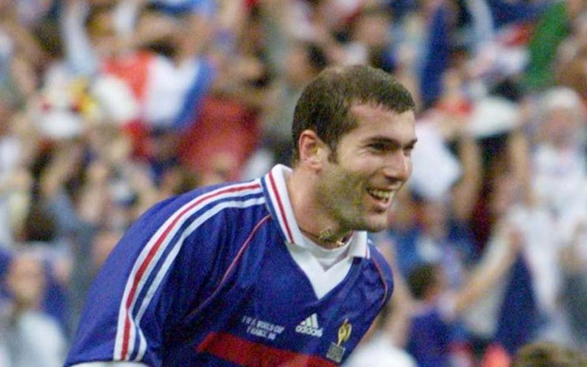
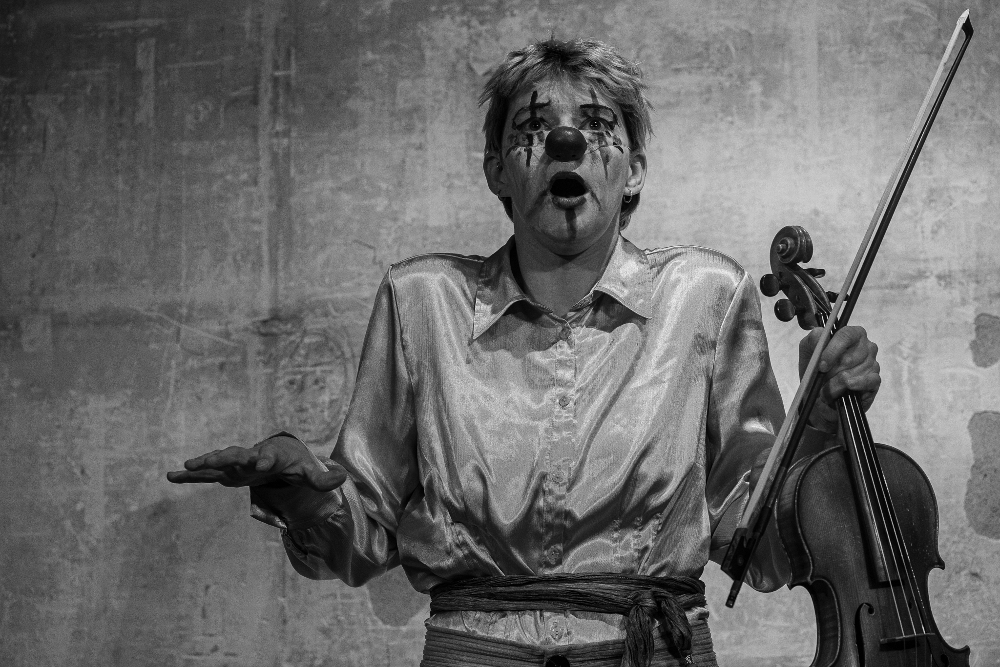
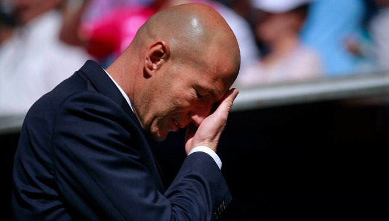
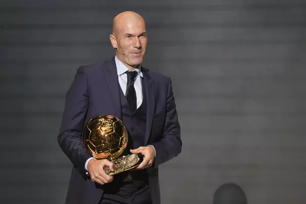
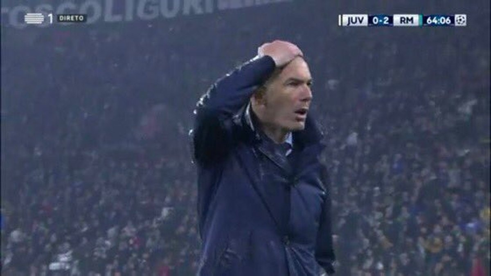

Zidane approuve ce théâtre
Zidane approuve ce théâtre
Zidane approuve ce théâtre
Zidane approuve ce théâtre
Bienvenue dans l'univers de la
Le gloups du vide et du doute, le clac de la précision et de l'élan
Découvrir le spectacle 💥
« Le théâtre c'est comme le football : ça se joue avec les tripes. »
— Zinedine Zidane (citation imaginaire mais probable)
La cie Clouks c'est le gloups du vide et du doute, le clac de la précision et de l'élan, et le tout sans signification précise car le sens vient beaucoup d'ailleurs que des mots et les onomatopées vont bon train.
Cette jeune compagnie de théâtre physique et musical est nourrie par le clown, le jeu masqué et le bouffon. Un théâtre engagé, un brin absurde, poétique et vivant, pensé pour rassembler et créer des émotions, des évocations et quelques réflexions.


Zidane aussi a sorti son mouchoir
Cette clowne débarque dans la rue avec une mission solennelle : émouvoir aux larmes pour laver la société de ses maux. Elle est alors vite décontenancée de constater l'effet comique qu'elle produit.
Son compagnon dans cette quête impossible, un violon, devient un prétexte grotesque et poétique à l'émotion. Tour à tour pathétique ou sublime.
De la mort à l'amour en passant par la guerre, le spectacle aborde des thèmes universels d'une manière grotesque mais non moins sincère.
Jeune artiste pluridisciplinaire, Clara s'est formée à l'école de théâtre physique Lassaâd à Bruxelles (2021–2023). Titulaire d'un Bachelor en littérature et anthropologie à l'Université de Neuchâtel (2021), elle nourrit son travail d'une réflexion sur les comportements humains et les dynamiques sociales.
Elle se perfectionne dans le clown et le bouffon auprès d'Hélène Vieilletoile, de Gabriel Chamé et de Fred Robbe, et explore le jeu masqué avec Omar Porras.
Musicienne dès l'enfance, Clara a étudié le violon au Conservatoire Populaire de Genève. Ce bagage nourrit ses collaborations scéniques, notamment dans Un beau jour (création 2023) ou dans Hapax ou la Comparution immédiate (Festival de la Bâtie 2025), où elle est à la fois musicienne et comédienne.

Bien qu'absent des répétitions pour des raisons logistiques, Zidane est présent dans chaque geste, chaque roulade, chaque coup de tête. Son influence sur la compagnie est totale et inexplicable.
Pour des dates, des collaborations, ou simplement pour parler de Zidane.

Zidane attend votre message avec impatience